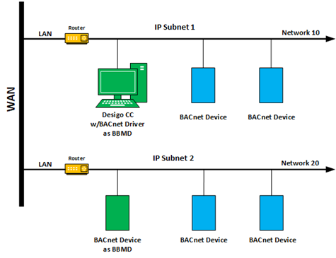

Network Considerations
Use the following guidelines when configuring the connection settings:
- BACnet Server requires at least one physical network and one virtual network.
- A BACnet connection must have a unique combination of IP address and UDP port. For example, if you have a BACnet driver at address 1.2.3.4 and port 47808, you cannot have the BACnet server with the same settings. However, you can have the following:
- Different IP address or a different port: 1.2.3.4 and 47809 (or, 1.2.3.5 and 47808)
- Different IP address and a different port: 1.2.3.5 and 47809.
Scenario 1
If you want the BACnet driver and the BACnet server to communicate with each other, give the BACnet server a different IP address on the same IP segment and use the same port—for example, 1.2.3.5 and 47808. In this case, you do not need a BBMD because the addresses are on the same IP segment. As long as you are not using DHCP, you can assign a second IP address to the same NIC in Windows Network Connections.
Scenario 2
If you want the BACnet driver and the BACnet server to communicate with each other, and you are using DHCP, you can use a second NIC on the same network so that you get another IP address from the same segment. Alternatively, you can use the same IP address but a different port. Once you use a different port, you need a BBMD to bridge the two ports. Since the BACnet server cannot be a BBMD, you have to configure the BACnet driver to be the BBMD.
Scenario 3
If you do not want the BACnet driver and the BACnet server to communicate with each other, you can use a different IP address and the same port on a different segment. Alternatively, you can use the same IP addresses and different ports. Do not set up a BBMD to bridge the ports.
Scenario 4
If you want the BACnet server to communicate with a BACnet network on a different subnet, you must have a BBMD configured on each subnet. Since the BACnet server cannot be a BBMD, you must configure other devices as the BBMD. For example, you could configure the BACnet driver on the Desigo CC management station to be a BBMD on the segment that the BACnet server is on and then configure a device on the other segment to be a BBMD. There can be only one BBMD per network segment.
